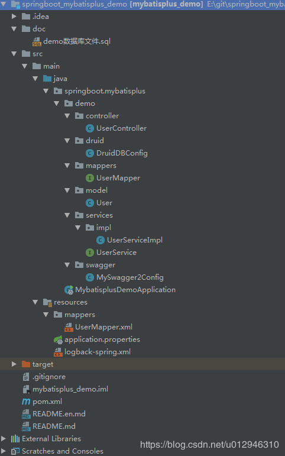
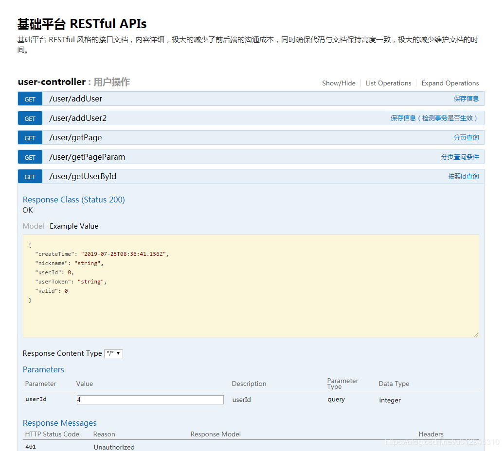

整合之前说一下 mybatisPlus 的特征，也是官网原文：官网
- 无侵入：只做增强不做改变，引入它不会对现有工程产生影响，如丝般顺滑
- 损耗小：启动即会自动注入基本 CURD，性能基本无损耗，直接面向对象操作
- 强大的 CRUD 操作：内置通用 Mapper、通用 Service，仅仅通过少量配置即可实现单表大部分 CRUD 操作，更有强大的条件构造器，满足各类使用需求
- 支持 Lambda 形式调用：通过 Lambda 表达式，方便的编写各类查询条件，无需再担心字段写错
- 支持主键自动生成：支持多达 4 种主键策略（内含分布式唯一 ID 生成器 - Sequence），可自由配置，完美解决主键问题
- 支持 ActiveRecord 模式：支持 ActiveRecord 形式调用，实体类只需继承 Model 类即可进行强大的 CRUD 操作
- 支持自定义全局通用操作：支持全局通用方法注入（ Write once, use anywhere ）
- 内置代码生成器：采用代码或者 Maven 插件可快速生成 Mapper 、 Model 、 Service 、 Controller 层代码，支持模板引擎，更有超多自定义配置等您来使用
- 内置分页插件：基于 MyBatis 物理分页，开发者无需关心具体操作，配置好插件之后，写分页等同于普通 List 查询
- 分页插件支持多种数据库：支持 MySQL、MariaDB、Oracle、DB2、H2、HSQL、SQLite、Postgre、SQLServer2005、SQLServer 等多种数据库
- 内置性能分析插件：可输出 Sql 语句以及其执行时间，建议开发测试时启用该功能，能快速揪出慢查询
- 内置全局拦截插件：提供全表 delete 、 update 操作智能分析阻断，也可自定义拦截规则，预防误操作
框架结构：
整合项目结构图：

下面直接上代码：
1，pom.xml 文件：
1 |
|
2，UserController.java
1 | package springboot.mybatisplus.demo.controller; |
3，UserService.java
1 | package springboot.mybatisplus.demo.services; |
4，UserServiceImpl.java
1 | package springboot.mybatisplus.demo.services.impl; |
5，UserMapper.java
1 | package springboot.mybatisplus.demo.mappers; |
6，UserMapper.xml
1 |
|
7，User.java
1 | package springboot.mybatisplus.demo.model; |
8，MybatisplusDemoApplication.java
1 | package springboot.mybatisplus; |
9，application.properties 配置文件：
1 | # 运行端口 |
10，logback-spring.xml 配置文件：
1 |
|
11，MySwagger2Config.java
1 | package springboot.mybatisplus.demo.swagger; |
12，DruidDBConfig.java
1 | package springboot.mybatisplus.demo.druid; |
最后在上一下 demo sql 脚本：
1 | CREATE TABLE `user` ( |
最终整合效果：

在这里整个整合就已经完成了，可以成功跑起来项目，也可以直接在
https://gitee.com/hwm0717/springboot_mybatisplus_demo